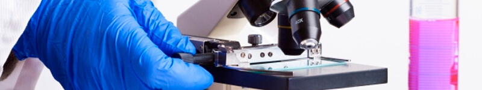

El servicio de urgencias y cuidados intensivos proporciona la atención inmediata en pacientes con patologías o
lesiones agudas, estados críticos, así como sobre su hospitalización y tratamiento.
Un veterinario y sus colaboradores permanecen en el hospital para responder las urgencias y atender a los animales
ingresados. Además, un equipo de internistas, cirujanos y anestesistas especializados permanecen de guardia por si
fuese necesaria su intervención en un momento determinado
Diagnóstico por Imagen
Modernas instalaciones y personal cualificado
El servicio de diagnóstico por imagen del centro Veterinario está integrado por modernas instalaciones, personal
especializado en la interpretación de imágenes y personal técnico cualificado.
El Departamento de Diagnóstico por la Imagen se formó tras la unión de diferentes sociedades radiológicas del
centro para cubrir todo el abanico de pruebas diagnósticas con la más alta tecnología y trabajar de
manera coordinada e integrada entre ellos.
Anatomía Patológica

Diagnósticos precisos y concisos
En Anatomía Patológica se realiza el diagnóstico de biopsias, citologías y necropsias de pequeños y grandes
animales.
Contamos con una sala de necropsias, cámaras de refrigeración, laboratorio de procesado de material y sala de
diagnóstico. Realizamos técnicas rutinarias, inmunohistoquímicas y tinciones especiales.
Trabajamos en estrecha relación con todos los servicios del Hospital lo que permite realizar un diagnóstico preciso y
completo.